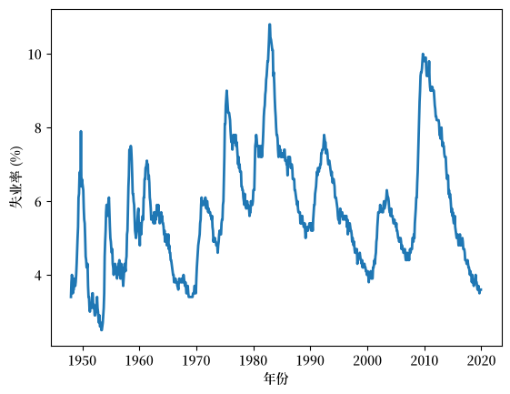
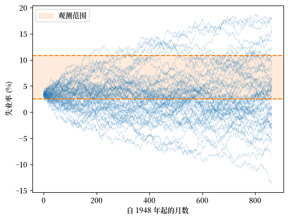
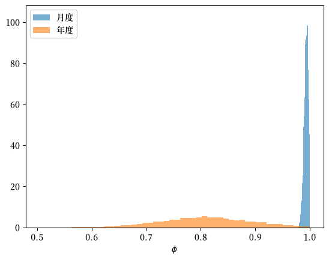
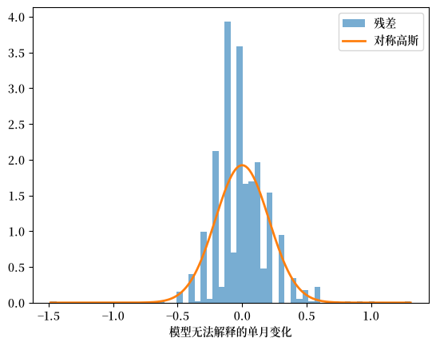
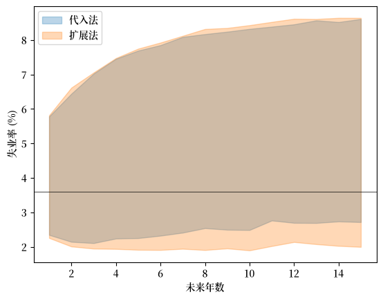
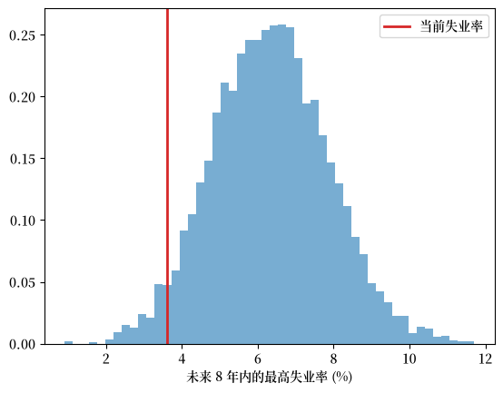

135. 失业的线性模型#
GPU
本讲座是在配有GPU的机器上构建的——不过没有GPU也可以运行。
Google Colab 提供带GPU的免费套餐，使用方法如下：
点击右上角的”播放”图标
选择 Colab
将运行时环境设置为包含GPU
除了 Anaconda 中已有的内容外，本讲座还需要以下库。
我们首先安装 numpyro 和 jax：
!pip install numpyro jax
我们还要安装 pandas_datareader，用它从 FRED 下载数据：
!pip install pandas_datareader
135.1. 概述#
本讲座将贝叶斯估计应用于美国失业率的线性 AR(1)过程模型。
我们在 AR(1)参数的后验分布 中已经接触过相关机制，但那里的数据是模拟的，重点也偏理论。
在这里，我们将仔细研究真实数据，围绕一个在 20 世纪 80 年代和 90 年代分裂了宏观经济学家的问题来组织本讲座：失业是否是一个随机游走？
在这个过程中，我们会观察到一种模型无法捕捉的非对称性。
这将引出题为 具有非对称冲击的失业动态 的后续讲座。
与 AR(1)参数的后验分布 和 非共轭先验 一样，我们通过 NumPyro 中的 NUTS 采样器对后验进行采样来完成估计。
（关于其工作原理的简要介绍，参见 非共轭先验 中的 NUTS 介绍。）
让我们从一些导入开始。
import numpy as np
import matplotlib.pyplot as plt
import datetime as dt
from pandas_datareader import data as web
import jax.numpy as jnp
from jax import random
import numpyro
import numpyro.distributions as dist
from numpyro.infer import MCMC, NUTS
import matplotlib as mpl # i18n
FONTPATH = "fonts/SourceHanSerifSC-SemiBold.otf" # i18n
mpl.font_manager.fontManager.addfont(FONTPATH) # i18n
mpl.rcParams['font.family'] = ['Source Han Serif SC'] # i18n
135.2. 自然率与滞后效应#
在 20 世纪 80 年代初，Nelson and Plosser [1982] 开启了单位根文献。
他们检验了 14 个宏观经济时间序列，发现只有其中一个能够拒绝随机游走。
粗略地说，这意味着对于大多数宏观经济序列而言，冲击的影响看起来是永久的，而不是暂时的。
对于失业而言，这一观点体现在 [Blanchard and Summers, 1986] 的**滞后效应假说（hysteresis hypothesis）**中。
该假说认为，对失业的冲击可能或多或少是永久性的，因为失业期会侵蚀技能以及对劳动力市场的依附。
相反，[Friedman, 1968] 的**自然率假说（natural rate hypothesis）**认为，失业率围绕一个稳定的均衡率波动——因此冲击是暂时的，而非永久的。
这场辩论之所以重要，是因为这两种观点意味着不同的政策。
具体来说，如果冲击是永久性的，那么一场严重的衰退会留下持久的创伤，从而促使人们采取补救行动。
在这里，我们用贝叶斯估计重新审视这个问题。
135.3. 数据#
我们使用美国民用失业率，即来自 FRED 的 UNRATE 序列，月度且经过季节性调整。
start, end = dt.datetime(1948, 1, 1), dt.datetime(2024, 12, 31)
unrate = web.DataReader("UNRATE", "fred", start, end)["UNRATE"]
2020 年 COVID-19 引起的峰值是一个极端异常值，由我们的模型一无所知的事件驱动，所以我们把它剔除。
pre_covid = unrate[unrate.index < "2020-01-01"]
u_monthly = pre_covid.to_numpy()
print(f"{len(u_monthly)} monthly observations")
864 monthly observations
这是月度序列。
fig, ax = plt.subplots()
ax.plot(pre_covid.index, u_monthly, lw=2)
ax.set_xlabel('年份')
ax.set_ylabel('失业率 (%)')
plt.show()
findfont: Failed to find font weight normal, now using 600.

图 135.1 美国月度失业率，1948–2019#
如 图 135.1 所示，失业率在衰退中急剧上升，在复苏中缓慢下降，但它始终保持在一个区间内——在整个战后时期大致为 3% 到 11%。
（请记住这个区间，因为它与单位根之争相关联，我们将在下文讨论。）
135.4. 失业的线性模型#
现在让我们使用月度数据来设置并估计模型。
135.4.1. 模型#
我们设失业率被拉回到一个正常水平 \(\bar u\)：
其中 \(0 \le \phi < 1\)。
这是一个线性 AR(1)过程模型，写成这种形式使得 \(\bar u\) 是序列所回归的水平，而 \(\phi\) 度量持续性。
\(\phi\) 越接近 1，序列在冲击后返回 \(\bar u\) 的速度就越慢；随机游走是极限情形 \(\phi = 1\)。
135.4.2. 先验#
我们把 \(\bar u\)、\(\phi\) 和 \(\sigma\) 视为未知，并对它们施加弱信息先验。
我们给 \(\phi\) 一个 \([0, 1)\) 上的均匀先验。
上端点被有意排除，因为这样做可以将我们限制在平稳区域内。
这是必要的，我们将在下文看到原因。
同时，这个先验仍然允许 \(\phi\) 在数据要求下尽可能地接近 1。
我们将 \(\bar u\) 以一个合理的自然率为中心，并配以相当宽的正态先验，并给冲击尺度 \(\sigma\) 一个半正态先验。
我们把模型写成一个 NumPyro 函数：每个 numpyro.sample 引入一个随机变量，关键字 obs= 将最后一个变量与数据绑定，从而提供似然。
def linear_model(u):
ubar = numpyro.sample("ubar", dist.Normal(5.5, 2.0)) # 自然率先验
φ = numpyro.sample("phi", dist.Uniform(0.0, 1.0)) # 持续性先验
σ = numpyro.sample("sigma", dist.HalfNormal(1.0)) # 波动率先验
μ = ubar + φ * (u[:-1] - ubar)
numpyro.sample("u_obs", dist.Normal(μ, σ), obs=u[1:])
向量 μ 保存了条件均值 \(\bar u + \phi(u_t - \bar u)\)，而 obs=u[1:] 表示每个下一个值都是从 \(N(\mu_t, \sigma^2)\) 中抽取的。
这一条语句就编码了整个似然。（关于编写 NumPyro 模型的更多内容，参见 非共轭先验。）
135.4.3. 估计#
我们用 NUTS 对后验进行采样，运行四条链以便检查收敛性。
我们使用 chain_method="vectorized"，它在单个设备上同时对所有链进行评估，因此相同的代码在 CPU 或 GPU 上都能不变地运行。
def run_nuts(model, data, seed=0, num_warmup=1000, num_samples=2000, num_chains=4):
"使用 NUTS 采样器对 NumPyro 模型进行采样。"
mcmc = MCMC(NUTS(model),
num_warmup=num_warmup, num_samples=num_samples,
num_chains=num_chains, chain_method="vectorized",
progress_bar=False)
mcmc.run(random.PRNGKey(seed), jnp.asarray(data))
return mcmc
我们将模型拟合到月度数据。
mcmc_monthly = run_nuts(linear_model, u_monthly)
现在我们检查输出。
mcmc_monthly.print_summary()
mean std median 5.0% 95.0% n_eff r_hat
phi 0.99 0.00 0.99 0.99 1.00 2904.53 1.00
sigma 0.21 0.00 0.21 0.20 0.22 4583.96 1.00
ubar 5.69 1.14 5.71 3.72 7.42 3645.82 1.00
Number of divergences: 0
每一行总结了一个参数的后验。
mean、median 以及 5.0%/95.0% 列给出后验均值、中位数和 90% 可信区间；std 是后验标准差。
最后两列是收敛诊断：n_eff 是有效独立抽样数，r_hat 比较链内和链间的变化——一个非常接近 \(1.0\) 的值意味着各链一致，采样器已经收敛。
这里 r_hat 基本上为 1，n_eff 也很大，所以我们可以信任这些抽样。
对我们而言重要的数值是 \(\phi\) 的后验：它的质量紧紧地贴向 1。
具体来说，均值和中位数都非常接近 1，而标准差非常小。
换句话说，在月度频率上，美国失业率几乎是一个随机游走。
这就是滞后效应的边界。
因此，我们发现自然率观点和滞后效应观点在月度数据中几乎无法区分——估计结果与两者都一致。
这就是为什么那个时代的单位根检验难以平息这场辩论 [Røed, 1997]。
135.5. 随机游走会漂离#
虽然上面的估计似乎为单位根假说提供了合理的支持，但有一个充分的理由认为它是错误的。
要看到这个论证，假设失业率真的是一个纯粹的随机游走，其中 \(\phi = 1\)：
那么 \(u_t = u_0 + \sum_{s=1}^t \varepsilon_s\)，因此其方差无界增长：\(\operatorname{Var}(u_t) = t\sigma^2\)。
分布会永远扩散，最终概率质量会离开每一个有界区间。
我们可以通过模拟许多随机游走路径来观察这一点，用观测到的单月变化来设定冲击大小，并观察它们的扩散。
rng = np.random.default_rng(0)
T = len(u_monthly)
σ_rw = np.diff(u_monthly).std()
paths = u_monthly[0] + np.cumsum(rng.normal(0, σ_rw, size=(400, T)), axis=1)
u_min, u_max = u_monthly.min(), u_monthly.max()
fig, ax = plt.subplots()
ax.plot(paths[:60].T, color='C0', lw=0.5, alpha=0.3)
ax.axhspan(u_min, u_max, color='C1', alpha=0.15, label='观测范围')
ax.axhline(u_min, color='C1', ls='--', lw=1.5)
ax.axhline(u_max, color='C1', ls='--', lw=1.5)
ax.set_xlabel('自 1948 年起的月数')
ax.set_ylabel('失业率 (%)')
ax.legend()
plt.show()

图 135.2 随机游走离开观测范围#
在 图 135.2 中，虚线标记了数据中曾出现过的最低和最高失业率，阴影区域是它们之间的区间。
模拟路径像 \(\sqrt{t}\) 一样扩散，并迅速蔓延到这个区间之外，甚至包括负的失业率。
随机游走没有锚点，但失业率显然有——它在七十年里一直保持在一个狭窄的区间内。
所以我们已经可以排除精确的随机游走。
当我们检查年度数据时，这一点会更加清楚。
135.6. 月度与年度#
月度数据把 \(\phi\) 钉在了 1 上。
不同的频率能否让我们看到更多东西？
我们用年末值构造一个年度序列，并对它拟合相同的模型。
u_annual = pre_covid.resample("YE").last().to_numpy()
print(f"{len(u_annual)} annual observations")
72 annual observations
我们对这个更短的序列拟合相同的模型。
mcmc_annual = run_nuts(linear_model, u_annual)
现在我们比较两个频率下 \(\phi\) 的后验。
φ_m = np.asarray(mcmc_monthly.get_samples()["phi"])
φ_a = np.asarray(mcmc_annual.get_samples()["phi"])
fig, ax = plt.subplots()
ax.hist(φ_m, bins=50, density=True, alpha=0.6, label='月度')
ax.hist(φ_a, bins=50, density=True, alpha=0.6, label='年度')
ax.set_xlabel('$\\phi$')
ax.legend()
plt.show()
findfont: Failed to find font weight normal, now using 600.

图 135.3 持续性参数的后验#
图 135.3 说明了我们的主要发现：年度的 \(\phi\) 后验明显低于 1，具有清晰的回归，而月度的后验则紧贴边界。
这并不矛盾。
如果月度持续性是 \(\phi\)，那么对于年末值而言，持续性大约是 \(\phi^{12}\)，而将一个接近 1 的数字提升到十二次方会把它明显拉到 1 以下——这与我们的年度估计一致。
135.7. 模型遗漏了什么#
再次审视 图 135.1，我们注意到失业率在衰退中迅速跳升，在复苏中缓慢下降。
这是一种我们当前模型无法复制的非对称性。
要弄清楚原因，我们仔细审视模型中唯一随机的部分——冲击。
我们分三步进行：陈述模型对冲击的假设，从数据中恢复冲击，并比较两者。
135.7.1. 模型对冲击的假设#
给定上一期的失业率 \(u_t\) 和参数，下一期的失业率是一个确定性的条件均值加上一个冲击：
重新整理，冲击就是实际发生的值与模型预期值之间的差距：
模型对这些冲击提出了一个强烈且可检验的断言：它们是从一个对称的正态分布中独立抽取的。
如果这个断言成立，我们从数据中恢复的冲击应该看起来像一条钟形曲线。
如果它失败，它失败的方式将告诉我们模型遗漏了什么。
135.7.2. 恢复冲击#
我们无法直接读出冲击，因为我们不知道参数 \(\bar u\) 和 \(\phi\)。
所以我们对它们进行估计，为每个参数代入一个单一的代表性值。
我们使用后验中位数——对于快速诊断而言这是一个合理的选择。
med = {k: np.median(np.asarray(mcmc_monthly.get_samples()[k]))
for k in ("ubar", "phi", "sigma")}
resid = u_monthly[1:] - (med["ubar"] + med["phi"] * (u_monthly[:-1] - med["ubar"]))
resid 数组保存了我们估计的冲击，每一个对应一个月度到月度的转移——即模型的残差。
切片就是把每个月与它前面的那个月对齐。
resid 的每个元素是 \(u_{t+1} - \big(\hat{\bar u} + \hat\phi\,(u_t - \hat{\bar u})\big)\)，即模型的向前一步预测误差，其中带帽子的符号表示中位数估计。
（因为我们的估计 \(\hat\phi\) 非常接近 1，所以这几乎就是月度变化 \(u_{t+1} - u_t\)。）
135.7.3. 与高斯分布比较#
现在我们来问，这些残差看起来是否是高斯的。
我们叠加一个正态密度，其标准差被设置为等于残差本身的标准差。
这是有意为之的：残差的均值已经接近零，所以匹配方差就使得均值和扩散都一致。
剩下的任何差异就是形状上的差异——这正是我们想要分离出来的。
度量形状的一种方式是偏度（skewness），即三阶标准化矩：
对于任何对称分布，这个度量为零；当右尾更长时，它为正。
现在我们绘制残差并计算它们的偏度：
def skewness(x):
x = x - x.mean()
return (x**3).mean() / x.std()**3
fig, ax = plt.subplots()
ax.hist(resid, bins=60, density=True, alpha=0.6, label='残差')
grid = np.linspace(resid.min(), resid.max(), 200)
gauss = np.exp(-grid**2 / (2 * resid.std()**2)) / (resid.std() * np.sqrt(2 * np.pi))
ax.plot(grid, gauss, 'C1', lw=2, label='对称高斯')
ax.set_xlabel('模型无法解释的单月变化')
ax.legend()
plt.show()
print(f"residual skewness = {skewness(resid):.2f}")

图 135.4 模型残差呈右偏#
residual skewness = 0.39
图 135.4 中的残差在两个方面偏离了高斯分布。
它们是重尾的且尖峰的：比钟形曲线所允许的有更多微小变化，也有更多大幅变化。
此外，它们是右偏的，最大的意外出现在上行方向（衰退）。
对称高斯分布（橙色）无法匹配这两个特征：它把向上和向下的冲击视为等可能，也无法容纳偶尔出现的非常大的跳跃。
所以我们的模型注定会误读数据，把罕见的向上跳跃和长期温和的下滑视为同一种冲击。
135.7.4. 关于代入法的说明#
一个贝叶斯纯粹主义者会反对说，这里并不存在单一的残差序列。
\((\bar u, \phi)\) 的每一次后验抽样都意味着它自己的残差序列，而我们只是选择了中位数。
这个反对是合理的，而这个检验的完全贝叶斯版本——从后验中模拟整个数据集并比较某个汇总统计量——正是我们在 具有非对称冲击的失业动态 中所做的。
这个代入法检验是那个更完整测试的一个快速预览。
捕捉这种非对称性是下一讲座的任务，在那里我们对冲击本身而非回归曲线进行建模。
135.8. 练习#
讲座 预测 AR(1) 过程 通过模拟未来路径来预测一个 AR(1)过程，既考虑一个以固定参数值为条件的预测分布，也考虑一个对参数后验不确定性进行积分的预测分布。
以下练习将这些思想应用到我们拟合的失业模型上。
练习 135.1
使用拟合的年度模型，从最后观测到的值开始，用两种方式预测未来 \(H = 15\) 年的失业率：
代入法：将参数固定在其后验中位数上，并模拟许多未来路径；
扩展法：对于每条未来路径，从后验中抽取一组新的 \((\bar u, \phi, \sigma)\)。
在同一坐标轴上绘制各自的 90% 预测区间并进行比较。
哪个区间更宽，为什么？
解答 练习 135.1
我们使用年度后验抽样，并从最后一个观测值向前模拟。
我们使用年度模型，因为它的持续性 \(\phi\) 远比月度频率下更不确定， 所以参数不确定性更有话可说。
post = mcmc_annual.get_samples()
ubar_s = np.asarray(post["ubar"])
φ_s = np.asarray(post["phi"])
σ_s = np.asarray(post["sigma"])
def sim_future(u_last, ubar, φ, σ, H, rng):
"从 u_last 开始向前模拟线性模型 H 步。"
u = np.empty(H)
prev = u_last
for h in range(H):
prev = ubar + φ * (prev - ubar) + rng.normal(0, σ)
u[h] = prev
return u
H, N = 15, 2000
u_last = u_annual[-1]
rng = np.random.default_rng(0)
# 代入法：参数固定在后验中位数上
ub0, φ0, σ0 = np.median(ubar_s), np.median(φ_s), np.median(σ_s)
plug = np.array([sim_future(u_last, ub0, φ0, σ0, H, rng) for _ in range(N)])
# 扩展法：为每条路径抽取一组新的后验样本
idx = rng.integers(0, len(φ_s), N)
ext = np.array([sim_future(u_last, ubar_s[i], φ_s[i], σ_s[i], H, rng)
for i in idx])
fig, ax = plt.subplots()
horizon = np.arange(1, H + 1)
for data, c, lab in [(plug, 'C0', '代入法'), (ext, 'C1', '扩展法')]:
lo, hi = np.percentile(data, [5, 95], axis=0)
ax.fill_between(horizon, lo, hi, alpha=0.3, color=c, label=lab)
ax.axhline(u_last, color='k', lw=0.5)
ax.set_xlabel('未来年数')
ax.set_ylabel('失业率 (%)')
ax.legend()
plt.show()

两种预测都从较低的起始值向回归水平 \(\bar u\) 上升，且区间随着我们展望得更远而变宽。
扩展法的区间明显更宽，因为它在未来冲击的不确定性之上，还加入了对参数的不确定性——而这里持续性 \(\phi\) 和水平 \(\bar u\) 都确实是不确定的。
练习 135.2
沿用 Wecker 的方法（参见 预测 AR(1) 过程），我们也可以为一个路径统计量——整条未来路径的非线性函数——构造一个预测分布。
将未来 \(H = 8\) 年内的最高失业率作为统计量：一个衡量未来几年可能有多糟糕的简单指标。
使用扩展模拟（每条路径抽取一组后验样本），为每条路径计算这个最大值，并绘制它的预测分布。
在未来八年内的某个时点失业率达到至少 \(7\%\)——即衰退区间——的后验预测概率是多少？
解答 练习 135.2
我们重用上一练习中的 sim_future 和后验抽样。
H2, M = 8, 5000
idx = rng.integers(0, len(φ_s), M)
peak = np.array([sim_future(u_last, ubar_s[i], φ_s[i], σ_s[i], H2, rng).max()
for i in idx])
fig, ax = plt.subplots()
ax.hist(peak, bins=50, density=True, alpha=0.6)
ax.axvline(u_last, color='C3', lw=2, label='当前失业率')
ax.set_xlabel('未来 8 年内的最高失业率 (%)')
ax.legend()
plt.show()
prob = (peak > 7.0).mean()
print(f"P(unemployment reaches 7% within 8 years) = {prob:.2f}")

P(unemployment reaches 7% within 8 years) = 0.33
预测分布总结了未来几年里可能出现的”最坏情形”，同时对冲击和参数不确定性进行了积分。
从一个周期性低点出发，模型认为在这个视界内失业率相当有可能回到衰退级别。